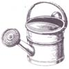
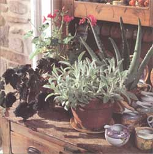
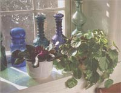
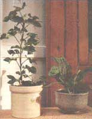

GARDEN &YARD
5 1/2 houseplants that even a black thumb couldn't kill
Houseplants and I had a less than auspicious introduction. During the first winter I spent in Alaska, I was desperate for something green and cheerful. When I spotted a display of African violets at the grocery store, I happily slipped a pot into my shopping cart. But it didn't cheer me up for long; its death was quick and upsetting. Despite that dreary beginning, I've kept trying. I'd always enjoyed success with outdoor gardening and I wasn't going to let a little plant in a pot defeat me. Over the years, I've had quite a few more failures - but some spectacular successes.
Today, half a dozen plants thrive on my windowsill, and they give me no end of pleasure during the bleak months of winter. After years of experience, I've learned that the keys to success are three: don't overwater; don't let plants get root-bound in their pots; and find out ahead of time whether plants are fussy when it comes to growing indoors. How can you tell which plants are easy keepers? In my experience, any plant that easily roots from a cutting is equally easy to maintain as a houseplant.
Rooting a cutting is incredibly simple, considering the reward. All you need is a four to six inch piece snipped from fresh, new growth. Strip the leaves from the bottom two or three joints, leaving two to four leaves at the top. Coat the stem with a root promoter (Rootone is my preference). Then fill a pot with potting mix, poke a hole down the center (use the handle of a wooden spoon to make perfect holes), gently push the cutting far enough into the hole to cover the joints, and firmly press the mix down around it. Place the pot away from full sunlight and keep the potting mix evenly moist until your new plant starts to grow.
Good commercial potting mix can be hard to find, but I prefer it to garden soil because there's no chance it will introduce a pest or disease. When I purchase potting soil, I look for a broken bag so I can see and feel what I'm getting. Good soil is light and loose and holds water well. If your garden has loamy soil (see "The Dirt on Dirt," issue #136), you can use this loam for houseplants if you first sterilize it in the oven. Spread the soil in a thin layer in a shallow baking pan and place it in a 200°F oven for one-half hour - don't expect it to smell like fresh baked bread.
Fertilizing
Houseplants can thrive for a long while on the meager nutrients in potting soil. Overfertilizing can cause a potted plant to grow rapidly and become root-bound. Fertilizers can also burn roots and kill the plant. As a rule, young plants don't need any fertilizer; older plants benefit from occasional light fertilizing. Just how often you need to fertilize a houseplant depends on what you're growing and on the time of year. Most plants put on new growth during warm months. Unless a plant is in bloom, don't fertilize it during winter or you'll disrupt its natural growth pattern.
Manure tea and compost work wonders for outdoor gardens but aren't quite so wonderful indoors. Manure tea may cause potting soil to smell unpleasant (diminishing any cheer they were spreading), and compost is too bulky to be practical as a fertilizer for pots. Any store that carries houseplants carries potted plant fertilizers, many of them organic. Read labels to choose which fertilizer best suits the type of plant you're growing, and follow the directions to the letter or you may do more harm than good.
Watering
The best sign that a plant needs a shot of fertilizer is yellow leaves in new growth. If a plant isn't doing well, however, the cause is likely to be something other than too little fertilizer. The plant may not be getting enough light, the potting soil may be too compacted so that the roots get too little oxygen, or you may be underwatering or overwatering.
Overwatering is an all too common cause of houseplant failure. It doesn't help that the symptoms of overwatering are often the same as those for underwatering - the plant wilts so that your natural inclination is to pour on more water. While most plants like to remain evenly moist, some prefer more time to dry out between waterings. Plants in small pots, those in bloom, and those sitting alone need water more often than large plants, foliage plants, and those potted in groups. Only through experience with a particular plant in a particular environment will you know exactly how much water it needs, so keep your eyes open.
I water most of my plants once a week in summer, when the air is humid and potting soil holds moisture longer. In winter, when the wood stove dries the air, I water blooming plants twice a week. Foliage plants go dormant during winter, when they need less water anyway, so I don't bother increasing their watering schedule. In any case, my schedule doesn't go strictly by the calendar and this isn't rocket science. I stick a finger into the soil and add water when it feels dry.
Each pot should have a few large pebbles between the soil and the bottom of the pot to ensure good drainage. Always use enough water for some to drain out the hole in the bottom of the pot. The saucer that catches water beneath your pot should be emptied enough so that your plant won't be standing in it for too long.
Every three or four waterings, give the plant a good soaking by placing it in a dishpan or bucket and adding water until it reaches halfway up the pot. In approximately 20 minutes the water will wick to the soil's surface. Don't leave the plant in the water for more than an hour, or the roots will become oxygen starved. When the surface of the potting mix looks moist, set the pot in the sink and let drain. While you wait, rinse the plant's leaves with warm water (never hot!) to remove dust.
When a plant starts drying out much faster than usual, chances are it's becoming root-bound. Roots that fill a pot and have no place to go circle around between the pot and the soil. As they grow longer, they squeeze tighter and tighter, compressing the potting mix until there's little air left and no room for water. In essence, the plant strangles itself. To protect plants from this danger, I root cuttings in pots that are at least six inches in diameter. Some gardeners root cuttings in smaller pots, then transfer the plants to six inch or larger pots for growing, but I'd rather keep things as simple as possible.
ROOT-BOUND:
To protect plants from this danger, root cuttings in pots that are at least six inches in diameter.
The nice thing about plants that root easily from cuttings is that when they do get root-bound you don't have to keep replanting them in bigger and bigger pots. Instead, start another plant from a fresh cutting. When the cutting takes, replace the old potted plant with the new one. Scrub out the old pot, disinfect it with household bleach, and you've got an empty pot ready to root the next cutting.
Wandering Jew, more properly known as tradescantia, is a hanging plant or "trailer" that's among the easier to propagate from cuttings. My favorite is commonly known as bridal veil because, treated right, it displays a cascade of tiny white blossoms. Even when it's not in bloom, the plant is still colorful because the underside of its leaves are purple.
Bridal veil is only one of about 10 different species of tradescantia that grow well indoors. The others don't have the same showy flowers, but many have cheerful yellow leaves or green leaves striped with yellow, white, or purple. The leaves vary in size, depending on species, but all are longer than they are wide and are pointed at both ends.
Tradescantia likes an even level of moisture. Guidebooks tell you to fertilize once a month, but the friend I got my cutting from had a bridal veil that was five feet long and eternally in bloom. Her secret was to fertilize it every week when she watered. She also trimmed trailers frequently to encourage the plant to branch out and grow bushy. Without trimming, trailers grow thin and scrawny. My bridal veil (which grows in a smaller pot than my friend's) gets pot-bound when growth reaches about three feet, so I start a new cutting every couple of years.
Swedish ivy, also known as creeping Charlie but more properly called plectranthus, is another easy keeper. The plant I took my cutting from caught my eye because it was thriving despite its location in a sunny, windy spot. Initially my cutting teetered at the brink of death, causing my husband to tease me about not knowing when to admit defeat. Finally I remembered that the mother plant had enjoyed a dry environment. So I began watering less frequently, and the cutting took off to create a lush duplicate of the original.
Plectranthus is a hanging plant that comes in about 250 different species, but you're likely to see only three of them growing indoors. The shiny leaves are roundish with scalloped edges, and may be solid green or spotted with white or yellow. Leaves of any variety will turn spotty and drip off, if the plant is too hot or cold. Like tradescantia, plectranthus must be kept trimmed for full, bushy growth.
I have never been able to ascertain the exact identity of my plant, but the folks at the local nursery believe it's a hybrid developed for dry conditions. The leaves are smaller than those of a standard plectranthus and - rather than having the usual white flowers - mine has delicate clusters of tiny pink blossoms.
Houseplant guidebooks say to keep the soil moist and to fertilize monthly, but my plant does best when kept slightly dry and fertilized only infrequently. I hang it in a south-facing window, but, like any plectranthus, it would do equally well in a window with northern exposure. Swedish ivy loses vigor with age, so replace it every couple of years.
Prayer plant is the popular name for maranta, due to its habit of bending its leaves upward at night. The movement can be quite startling if you're not used to having plants that stir. The large oval leaves are gaily painted in three shades of green, overlaid with red stripes.
I got my cutting at a restaurant, where a piece of the beautiful mother plant was hanging over a booth and getting pinched off by people sliding in and out. Even though the little pinched off piece had air roots, I never dreamed anything so exotic looking could easily take root. It did, though, and for a long while provided a spot of cheerful color on my desk.
Prayer plant goes semidormant in winter, when it should be watered sparingly. In summer, it grows quite rapidly; mine eventually got so long I had to move the bookshelf to make more room for it. It continues to thrive there, despite the small amount of direct light it receives.
Geranium, more properly called pelargonium, is an old-fashioned plant with modern appeal because it blooms freely without demanding a lot of care. It needs full sun to flower but will do well as a foliage plant in indirect light if you keep it pruned so it doesn't get leggy. Miniatures and dwarves do best indoors, because they don't branch out and get as rangy as older, larger types.
Pelargoniums come in 280 species offering incredible variety in flower color and shape, and in leaf color, shape, and scent. The single-flowered types of grandma's time, with five petals per floret, aren't nearly as interesting as today's double-flowered geraniums (which have more than five petals), and rosebud varieties (which have tightly packed double flowers), or cactusflowered types (which have petals rolled into spikes). To keep a geranium in bloom, pinch off blossoms as soon as they start to fade. Trim back tall stems after they bloom so that your plant will stay bushy.
For a cheerful look in anything not placed in a south-facing window, opt for a plant with leaves of gold, or even bicolored or tricolored leaves in shades of green, yellow, white, and/or pink. Leaf shape also varies from the standard roundish leaf with scalloped edges to ivy shaped, oak-leaf shaped, and grape-leaf shaped.
To make things even more interesting, leaves may smell like lemons, apples, nutmeg, peppermint, or chocolate, with new flavors being developed all the time. Scented leaves, brushed lightly with your hand, release oils that serve as natural room fresheners. Dried, the leaves can be used in teas and potpourris.
Geraniums tolerate dry conditions and, in fact, do best if they're allowed to dry out slightly between waterings. Give plants a thorough watering when the soil dries, or any time leaves start to look pale. For strong, healthy plants, fertilize no more than once a month in summer and not at all in winter. Old plants get woody and scraggly after about a year, making it a good idea to root cuttings annually.
Last year's plants can be moved outdoors for summer flowers with fresh cuttings rooted to blossom indoors the following winter. To ensure early winter blooms, I take cuttings in early spring, as soon as active growth starts. You can also start cuttings in early August, giving you plenty of time to clone your old plant before it's killed by winter frost (though you won't get flowers throughout the winter.
When you trim a cutting, prevent infection by cleanly snipping off the stem just below the lowest leaf nodule. Some geraniums are sensitive to root promoters, so if your cuttings wilt and die soon after they've been potted, try rooting some without applying rooting compound. Remove flower buds until the cuttings are well established.
Aloe vera is one of those plants that can't be rooted from cuttings. Instead, the mother plant surrounds itself with babies (offsets) that are easily pulled off and repotted. With its thorny spike leaves, aloe looks like an ugly duckling among plants with softer foliage. But juice from its fleshy leaves helps heal sunburns and stove burns, so I keep some handy in my kitchen. Sometimes my older plants are practically denuded of leaves, but I always have young ones coming along to replace them.
Aloe is a succulent - meaning it stores water in its leaves - and should be allowed to dry out between waterings. Water no more than weekly during summer, every three weeks in winter. Fertilize every six months. Once a year, add one teaspoon of dolomite lime per quart of soil.
One Christmas I was given a cute little homemade pot that cried out for a special kind of plant. Before long I chanced upon a miniature variegated aloe surrounded by babies. I took one tiny baby from my little pot, and it soon grew into five, each now with babies of their own. My little halfplant looks vaguely like its fleshy leaved cousin but is more ornamental than practical. It keeps its compact shape, making it the perfect plant to add a touch of green where space is limited.
Foliage Plants for Decorating Indoors, by Virginia F. and George A. Elbert, contains 382 pages on propagating and caring for potted greenery, with descriptions, environmental requirements, and numerous color photos. It is a bargain at $12.98 (plus $4 shipping and handling) from Discount Garden Books, PO. Box 25464, Portland, OR 97225; 800/327-1828.
Pelargoniums, by David Clark, in 124 pages describes how to propagate, cultivate, and care for over 200 kinds of geraniums. Many of these plants are illustrated in stunning color photos. It costs $19.95 (plus $4 shipping and handling) and is available from Timber Press, 9999 S.W. Wilshire, Suite 124, Portland, OR 97225; 800/327-5680.
Secrets of Plant Propagation, by Lewis Hill, contains 168 pages of illustrated step by step instructions covering a variety of methods for starting and dividing plants. It costs $14.95 (plus $2.50 shipping and handling) and is available from Storey Communications, Schoolhouse Road, Pownal, VT 05261; 800/827-8673.
|
 Add a little green to your house this winter with pots of plants. From left to right: begonias, geraniums, lamb's ear and aloe vera. |
 Swedish ivy (right), also known as creeping Charlie, is an easy keeper with shiny leaves. |
 Tow of the more popular houseplants are tree ivy (left) and maranta (right). |
|
 |
|
|